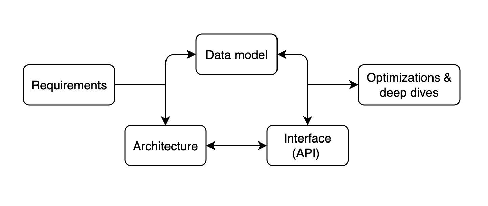

System Design Interview: Design Twitter/X Timeline - A Frontend Deep Dive
#103: System Design behind Twitter/X Timeline Frontend

Share this post & I’ll send you some rewards for the referrals.
Traditional system design interviews tend to focus on backend architecture:
API servers, databases, caching layers, load balancers, and service-oriented designs.
“Front-end” system design, by contrast, deals with the problems of scale and complexity that manifest in the browser or client environment.
Instead of optimizing for query latency or data replication, the focus shifts to rendering efficiency, client structure, network utilization, and managing data consistency between the client and server.
System design interviews matter because they reveal how well an engineer can think beyond individual components and consider the entire user experience as a system. Front-end system design interviews are a relatively new but increasingly important part of the hiring process for front-end engineers. They test not only one’s technical ability to build user interfaces but also the architectural thinking required to scale those interfaces to millions of users.
For companies with complex, dynamic interfaces such as Twitter/X, Netflix, Airbnb, Google Docs, and Figma, the frontend client is no longer a thin layer that merely renders data. It is a distributed system in its own right, managing state, orchestrating data fetching, caching results, handling concurrency, and maintaining real-time synchronization with the backend.
Designing this layer effectively can have a dramatic impact on user engagement and perceived performance, ultimately driving business goals.
Front-end system design is therefore not merely about choosing frameworks or UI libraries. It is about building systems that can evolve, scale, and deliver consistent performance as features grow and teams expand. Understanding this distinction is essential before diving into the architecture of complex interfaces like the Twitter/X timeline, where milliseconds of latency and subtle interaction patterns can define the entire product experience.
Onward.
Give Your AI Tools the Context They Need So They Stop Guessing (Sponsor)

Your AI tools are only as good as the context they have. Unblocked pieces together knowledge from your team’s GitHub, Slack, Confluence, and Jira, so your AI tools generate production-ready code.
I want to introduce Yangshun Tay as a guest author.
Yangshun is the creator of GreatFrontEnd, a platform for frontend engineers to prepare for front-end interviews.
Check out his website and social media:
He was previously a Staff Engineer at Meta. Also, he created Docusaurus 2, Blind 75, and the Tech Interview Handbook.
P.S. GreatFrontEnd is currently running a Black Friday sale, their biggest sale of the year. Don’t miss out on this opportunity!
Types of questions in front-end system design interviews
Front-end system design interviews fall into two categories:
“application design and component design.”
While both draw on the same foundation of architectural thinking, they operate at different levels of abstraction and test different problem-solving instincts.
The application-level design focuses on how to structure and architect an entire product or large feature. Candidates might be asked to design something like the Twitter timeline, a media streaming website, or a collaborative document editor.
These questions assess a candidate’s ability to design systems that can handle complex data flows, synchronize with back-end services, manage client-side state, and maintain consistent performance as the application scales.
Strong answers demonstrate an understanding of how to divide an application into layers, manage global versus local state, handle rendering efficiently, and make trade-offs between client-side and server-side responsibilities.
Each kind of app brings unique challenges that candidates should spend most of their time discussing:
Social media (e.g., Facebook, Twitter): Timeline API, pagination, rendering posts in various formats, performance
E-commerce & travel booking (e.g., Amazon, Airbnb): SEO, performance, forms, localization
Media streaming (e.g., Netflix, YouTube): Media streaming protocols, media player implementations
Collaborative apps (e.g., Google Docs, Google Sheets): Real-time collaboration models, conflict resolution approaches
The component-level design narrows the focus to building a single, self-contained piece of UI that appears simple on the surface but hides significant complexity beneath. Common examples include designing an autocomplete input, image carousels, or a modal dialog.
These components must handle accessibility, keyboard navigation, focus management, animations, and edge cases such as async data fetching and nested interactions.
Interviewers use these problems to evaluate a candidate’s depth of understanding in UI behavior, browser APIs, rendering models, and user experience details.
Although these two categories differ in scope, they complement each other…
Application-level design tests a candidate’s ability to think in systems and to understand how data and state flow through a complex interface.
Component-level design tests a candidate’s ability to execute on the smallest building blocks of those systems with precision and craft.
Together, they form a complete picture of what it means to design and engineer modern front-end applications at scale.
Framework for approaching front-end system design interviews
Many engineers struggle with system design interviews because they approach problems reactively, jumping straight into technical details before establishing a clear structure, or simply just hopping around topics with no clear flow, and risk ending up not sufficiently covering the important areas of the question.
I know it all too well because that was how I failed my first few system design interviews.
Therefore, I came up with an easy-to-remember mnemonic, RADIO, to help me remember how to approach system design questions.
The RADIO framework offers a systematic way to think through design questions methodically. It ensures you start with clarity, communicate your reasoning, and cover both breadth and depth.
RADIO stands for:
Requirements,
Architecture,
Data model,
Interface,
Optimizations.
Let’s dive in!
Requirements
Begin by clarifying what problem you are solving and what success looks like.
Identify both functional and non-functional requirements, what the system must do, and how well it must perform. This is also where you scope the problem to fit the interview.
For example, when asked to design the Twitter timeline, you might clarify whether the focus is on rendering the feed, handling infinite scroll, or supporting real-time updates.
Architecture
Once the goals are clear, outline the high-level structure of the system and describe its responsibilities.
In front-end design interviews, it’s common to have the layers for data fetching, state management, and the view (what users see and interact with). You should explain how data flows through these layers, where caching happens, and how user actions propagate changes.
The goal is to show that you can decompose a complex UI into well-defined subsystems that interact cohesively.
Data model
Describe the main data entities and state in the system.
With Twitter, that would be the feed, tweets, composer message, etc., and how they relate to one another. A solid understanding of data modeling shows you can design efficient structures for rendering what the user needs to see and interact with.
Interface (API)
Define how different parts of the system communicate.
This includes both internal interfaces, such as component boundaries and state management APIs, and external interfaces, such as REST or GraphQL endpoints. Each API should consist of the intention, parameters, and response shape.
Optimizations
After establishing a functional design, discuss the aspects of the system that are unique or complex and how you would improve it for scale and performance.
This can include performance techniques like DOM virtualization1, lazy loading2, media optimizations, and more.

Use the RADIO framework as a guide to ensure a comprehensive answer… not strict linear steps.
Lead the discussion with requirements, then be flexible to dive wherever the conversation or technical complexity requires.
Architecture, Data model, and the Interface (API) are usually discussed as a whole and not strictly in order.
Some candidates prefer to design the data model first before the Architecture and API, which might make more sense depending on the question.
Lastly, end with optimizations and deep dives, but revisit any of the earlier areas if you’re discussing new requirements or extending to new features.
You can read more about the RADIO framework on GreatFrontEnd.
Design Twitter/X Timeline’s frontend
Let’s apply the RADIO framework to a common front-end system design question:
“Design Twitter/X Timeline.”
By the end of this newsletter, we will have a solid front-end design for implementing a Twitter timeline, including specific optimizations for each part.
From here on, we’ll refer to the product as “Twitter” rather than “X”, since “Twitter” is more readable and recognizable.
Requirements
Let’s define some core functional requirements of the Twitter timeline:
Users can browse a timeline UI containing a list of tweets
Timeline contains text and image-based tweets
Users can perform actions on tweets, such as liking and retweeting
Users can click on a tweet to view the replies
When users scroll to the bottom of the timeline, more tweets load
Users can create new tweets
In reality, Twitter’s timeline supports more formats, such as videos, polls, and other actions, like replying to tweets.
But let’s first focus on the core functionality: consuming timeline tweets and creating new tweets.
Besides functional requirements, we can also discuss how to improve non-functional aspects such as performance, user experience, and accessibility through optimizations and deep dives.
Architecture
A well-structured front-end architecture separates concerns across distinct layers, each responsible for a specific set of tasks.
Before we discuss the layers involved, we have two decisions to make:
(1) where to render the webpage (client vs. server vs. hybrid),
(2) how navigations occur (the traditional way of full-page reloads vs. client-side).
Rendering approach
A large-scale application like Twitter can be built using several rendering approaches, each offering different trade-offs among performance, complexity, and infrastructure costs.
The main models are:
server-side rendering (SSR),
client-side rendering (CSR),
hybrid model.
Server-side rendering (SSR)
SSR generates the full HTML for a page on the server before sending it to the client.
This leads to faster first-paint times and better SEO because users and crawlers receive meaningful content immediately. Once the HTML is loaded, the client “hydrates” the page to attach event listeners and to enable interactivity.
Modern websites rely heavily on SSR to ensure quick perceived performance.
Client-side rendering (CSR)
In this model, the server first delivers a minimal HTML shell and a JavaScript bundle.
The browser then executes the JavaScript to fetch data and render the UI. CSR offers great interactivity once loaded, since subsequent updates can happen entirely on the client without page reloads.
However, it has slower first load performance and weaker SEO, since users initially see a blank page/spinner until the data is fetched.
Hybrid rendering
Hybrid architectures combine SSR and CSR to get the best of both worlds.
The server renders the initial page load for speed and SEO, and the client handles dynamic updates. This is often implemented using frameworks like Next.js and Remix. Twitter could render the first batch of tweets server-side and then fetch and render new tweets client-side as the user scrolls.
Since timelines are highly personalized, rendering timelines on the server primarily benefits performance instead of SEO. In reality, Twitter likely uses CSR because SSR requires more infrastructure resources, and fetching a timeline on Twitter is already pretty quick (takes less than 1s); the benefits SSR brings don’t outweigh the complexity required.
In practice, frameworks like Next.js, React Router, and Tanstack Start help you implement these various rendering patterns in your app, even allowing for custom rendering per page.
Navigation approach
Website navigation follows either a single-page application or a multi-page application approach… and the choice has direct implications for user experience and performance.
A single-page application (SPA) is a web app that loads a single HTML page and dynamically updates its content as the user interacts with the app, without requiring a full page reload. This works by using JavaScript to modify the page URL, fetch data from the server, and update the DOM. This results in fast, seamless navigation and an app-like experience.
In multi-page applications (MPA), each route corresponds to a separate HTML page. Navigating between pages triggers a full-page reload, which can simplify server-side rendering and improve SEO. Content-heavy sites typically use MPAs, but they can feel slower and less fluid for highly interactive features.
For a social media app like Twitter, SPAs are preferred, and SPAs rely on CSR.
More importantly, pages in SPAs can benefit from data in a shared client store. Most users access a tweet from the timeline. In an SPA, the key details of the tweet (text, media) are already loaded on the page and stored in the store; navigation to the tweet details page is instant and requires no server-side interaction. Additional data, such as replies, is fetched after navigation occurs.
On the other hand, in an MPA, navigation blows away the current page state. Hence, users will experience longer delays when navigating between pages, as they have to wait for the server to finish generating the HTML.
Architecture layers
With rendering and navigation decided, we can define the layers of the Twitter front end, which can be broken down into four main layers: View, Store, Data access, and the Server.
View
The view layer is what users interact with directly.
It includes the timeline page, tweet detail page, and a tweet composer component. It’s responsible for rendering data from the store and triggering user actions, such as liking a tweet or composing a new one. Its main goal is to provide a fast, interactive, and accessible user experience while remaining declarative and predictable in how it reacts to data changes.
In practice, these are your JavaScript frameworks/libraries, such as React, Vue, Svelte, etc.
Store layer
The store acts as the source of truth for client-side data and state.
It holds all application state in memory: the timeline, tweets, users, composer message, etc. And ensures consistency across different parts of the interface.
When a user performs an action, such as liking a tweet, the store immediately updates the local state (often optimistically) before synchronizing with the server. It also caches data for quick retrieval, normalizes3 entities to prevent duplication, and triggers re-renders in the view layer whenever data changes. The store decouples the UI from the backend, keeping the app responsive even during network delays.
In an SPA, this layer is initialized once and then persisted + updated throughout the session.
In practice, these are your state management libraries, such as Redux, Zustand, Jotai, etc.
Data access
The data access layer abstracts away the communication with the backend APIs.
It handles network requests, response parsing, and caching policies, and defines how data moves between the server and the store. This layer may also include retry logic, pagination handling, and transformations that convert raw API responses into normalized store-friendly structures. By centralizing all network operations here, the front end gains flexibility to change APIs, add batching, or introduce service workers without affecting the rest of the system.
In an SPA, this layer is also initialized once and persisted throughout the session, just like the store layer.
In practice, these are data-fetching libraries such as RTK Query, Tanstack Query, Relay, and Apollo Client.
Server
The server exposes HTTP endpoints for fetching timelines, posting tweets, and performing engagement actions such as likes or retweets.
While the server defines the data model and business rules, it relies on the front end to manage presentation logic, caching, and responsiveness. This layered architecture creates a clean separation of responsibilities. The view focuses on presentation; the store manages state; the data access layer handles communication; and the server provides data.
Since it’s an SPA, the store and data access layers are initialized on the first load, persisted throughout the session across navigations, and continuously updated as requests and user interactions occur.
Interface (API design)
In the architecture layers diagram, several data entities are passed around.
All of them either originate from the server or are being sent to the server. Hence, we can focus on the server APIs.
Most of these APIs require authentication as they’re personalized or specific to the user. It’s important to note that the user’s ID shouldn’t be included in the request and shouldn't be relied on as the source of truth for identity, as it can be spoofed and create a security vulnerability. The user’s identity should be derived from session cookies sent with the request.
We’ll assume the user is logged in and omit discussion of authentication and authorization mechanisms, since the focus is on the Twitter product.
1. Get Twitter timeline
GET /timeline?count=10&cursor=abcReturns a list of tweets. Pagination parameters are included so that clients know how to fetch the next page of tweets.
We’ll look at pagination in more detail in the optimizations section.
2. Get a single tweet
GET /tweets/{id}Returns a single tweet. Depending on the desired experience, replies can be fetched using another API (e.g.,/tweets/{id}/replies) or included in the tweet payload.
This API is available to the public, but if a session cookie is included in the request, the results can include personalized fields such as whether the user has liked the tweet.
3. Post a tweet
POST /tweetsCreate a new tweet. It accepts the following parameters:
When creating tweets with attached media, the media is first uploaded to blob storage, and an ID is returned to include in the POST request payload. Therefore, we also need an API for uploading media.
This API creates a tweet for a user; hence, it requires authentication.
4. Upload media
POST /media/uploadAccepts binary data, uploads into blob storage, and returns a media object ID that can be included when creating a tweet. An alternative is for the API to provide a pre-signed URL that the client can use to upload directly to blob storage.
5. Tweet actions
POST /tweets/{id}/like
POST /tweets/{id}/retweetCommon actions that can be taken on tweets. There are more, but these are the two main ones.
Data model/entities
Next, let’s look at the core entities that should be modelled in a way that is both efficient for rendering and resilient to frequent updates.
Similar to backend data models, which focus on efficient storage and relationships, we can model front-end data to prioritize ease of access, normalization, and caching.
Tweet entity
At the center of the timeline is the Tweet entity.
Each tweet contains a rich set of information:
text content,
author details,
timestamps,
engagement counts,
and possibly media attachments.
On the front end, data is often stored in a normalized form rather than as nested objects.
This means separating the author data and media into distinct entities, each referenced by an ID. This approach makes updates more efficient. For example, when a user’s avatar or display name changes, every tweet referencing that user can automatically reflect the update without having redundant data.
User entity
The User entity represents the authors and participants in the timeline.
It includes metadata such as:
name,
username,
profile picture,
verification status,
and relationship flags (for example, whether the current user follows them).
Because user data is shared across many tweets and UI surfaces, it’s often cached at the global application level to avoid repeated network requests and duplicated state.
Timeline entity
The Timeline entity itself represents the ordered feed of tweets.
It can be thought of as a list of tweet IDs, annotated with pagination information for fetching older or newer tweets.
Timelines are dynamic; as the user scrolls down, older tweets are fetched and appended to the list, and newer tweets can also be added to the top when the timeline is stale.
Normalized store structure
These entities live in the client store following a normalized structure.
Data normalization within client-side stores is the process of structuring data so that each unique entity is stored exactly once, with relationships between entities represented by references rather than nested copies. This concept mirrors relational database design, but applied in the context of a browser application.
On Twitter, a tweet might include a nested user object for its author, another for a retweet, and yet another for a reply. If these user objects were duplicated across many tweets, updating a single piece of user information (e.g., a display name or avatar) would require updating every instance across the store.
Normalization prevents this by separating users, tweets, and other entities into their own collections, using their IDs as keys. Entities then store references to other entities via IDs rather than embedding full user data.
This structure makes updates and caching far more efficient. If a user’s profile changes, only the corresponding user entry needs to be updated, and every component referencing that user will automatically reflect the change.
Normalized data also simplifies pagination, deduplication, and cache merging when new results arrive from the server. Most importantly, it keeps the client-side store lean and organized as the app grows in complexity, ensuring data consistency across views and interactions.
NOTE:
Data fetched from the server doesn’t need to be in the finalized, normalized form.
Normalization can be done on the server or the client, depending on where the processing should occur. If a product serves markets where user devices aren’t powerful… it might be better, performance-wise, to have the server handle normalization.
As of 2025, Twitter normalizes timeline data on the server and sends a compact payload to clients.
Optimizations and deep dive
With the core pieces of the Twitter front-end system laid out, let’s look at how the app can be optimized:
We’ll look at general optimizations across the board and zoom in on specific optimizations for each part of the app.
User experience
Loading states are the first touchpoint in this process.
When users open the app or navigate between views, the UI should always provide a clear signal that content is being retrieved, with spinners.
Twitter uses a single loading spinner, but a better approach would be to use skeleton placeholders—gray blocks resembling tweet shapes, rather than traditional spinners.
Skeleton screens preserve layout stability and make loading feel shorter because the visual structure is already in place. As data arrives, the placeholders seamlessly transition into actual content.
Error handling requires a similarly thoughtful approach.
When something goes wrong, the interface must communicate the issue clearly without breaking immersion. For transient failures, such as a dropped network connection, the timeline can display an inline error bar or toast notification, something non-blocking that encourages the user to retry.
More severe cases, such as an empty feed because of an API failure, call for a fallback UI that explains what happened and provides recovery options.
Twitter shows a “Retry” button alongside a short message instead of a blank page, maintaining context while guiding the user back to normalcy.
Performance optimizations
Performance is one of the most critical dimensions of front-end system design, especially for an application as dynamic and content-heavy as the Twitter timeline.
Let’s look at some performance techniques:
Reducing initial page load size through code splitting
Code splitting4 is a key performance optimization technique that allows web applications to load only the JavaScript necessary for the current view, rather than delivering the entire bundle upfront.
Twitter’s features, such as timelines, profiles, and notifications, each have distinct dependencies; sending all the code at once would significantly delay the initial load.
By splitting the code into smaller, route- or feature-specific chunks, the app reduces its initial JavaScript bundle size, improving time-to-first-render and time-to-interactive.
In Twitter, code splitting is used in the following scenarios:
Relevance: Lazily loading only the JavaScript code for the tweet formats shown in the timeline. There are many types of tweets: text, image, video, ads, etc., and each has a different appearance and interactions. Only the code needed for the tweet formats in the timeline is downloaded.
Interaction: Lazily loading JavaScript code for components that are only shown upon user interaction, e.g., Emojipicker when clicking on the emoji button in the composer, auto-completion of hashtags, and profile card that only appears when hovering over a tag/mention.
Navigational: Other pages, such as the tweet detail page, can be loaded lazily when a user clicks a tweet, rather than bundled with the timeline code.
This improves performance for the average user, who might never visit certain routes or perform certain actions. Combined with pre-fetching (loading likely future chunks in the background), code splitting provides a balance between speed and flexibility.
Modern build tools like Webpack, Rollup, and Vite support dynamic imports, which make code splitting straightforward.
Optimizing rendering performance through list virtualization
The timeline consists of a long list of tweet components, each with rich media and nested interactions.
Rendering every tweet at once would overwhelm the DOM, so Twitter relies on virtualized lists that render only the visible items in the viewport, using invisible <div>s so that the scrollbars are still present without actual content.
As users scroll, off-screen elements are recycled or unmounted to minimize memory usage. This approach keeps frame rates high and prevents layout thrashing.
Improving perceived performance through optimistic updates
Optimistic updates work by immediately reflecting a user’s action in the interface before the server confirms the change, creating the illusion of zero latency.
For actions such as liking, retweeting, or following, this technique ensures that the interface reacts instantly, maintaining the sense of momentum that defines a smooth social media experience.
When a user likes a tweet, for example, the heart icon fills in and the like count increments right away. Behind the scenes, the client simultaneously sends a request to the server to record the action. If the server responds successfully, nothing more needs to happen, since the UI has already been updated. But if the request fails, the client rolls back to the previous state. This approach hides network latency from the user, making interactions feel immediate even on slow or unreliable connections.
From an engineering perspective, implementing optimistic updates requires careful state management.
The client must maintain a consistent local representation of the data and reconcile it with the server’s eventual response. Using a client store, this is made easier as data is shared across many views (e.g., the same tweet appearing on multiple pages/placements), the store tracks a tweet’s state in a normalized fashion and has to update a Tweet’s likedCount value by 1 and likedByUser to true; there are no duplicated instances of tweets to search through and update.
Efficient media rendering
Every tweet can contain images, GIFs, or videos, and these assets are often the largest contributors to load time and memory usage.
Hence, it’s important to optimize how media is loaded, displayed, and recycled to maintain both perceived performance and smooth scrolling.
The first principle is lazy loading.
Media should never be fetched or decoded until it’s near the user’s viewport. This minimizes initial bandwidth consumption and prevents layout shifts during scrolling. Modern browsers support the loading=”lazy” attribute for images, but more advanced control can be achieved by using the IntersectionObserver5 API, which allows the app to load assets slightly before they appear on screen.
For videos and GIFs, loading low-resolution thumbnails or poster frames first gives the illusion of instant availability while deferring full playback until user interaction.
Next comes media optimization and sizing.
Twitter’s front-end requests media in multiple resolutions and serves the appropriate variant based on device type, screen density, and layout size. This is typically achieved using the <img srcset> and <picture> elements or equivalent client-side logic. On high-density displays, high-resolution assets are used selectively to maintain visual sharpness without overfetching.
For videos, adaptive bitrate streaming ensures smooth playback even under varying network conditions, seamlessly switching between quality levels.
Finally, perceived performance plays a significant role.
Progressive image decoding and blurred low-resolution placeholders (often called LQIP6 or “blurhash”) give users an instant visual cue that content is loading, reducing the sense of delay. Combined with skeleton loaders and smooth transitions, the feed feels continuously alive, even when data and media are still being fetched.
Timeline pagination approaches
Two common approaches to pagination in modern web applications are:
offset-based pagination,
cursor-based pagination.
Both are mechanisms for fetching data in chunks, but they differ in how they identify the next set of results and how well they handle dynamic, real-time data.
Offset-based pagination
It relies on numerical offsets to determine which results to fetch next.
For example, a request might specify ?offset=20&limit=10 to get the next ten tweets after the first twenty.
Offset-based pagination is straightforward and easy to implement, but it becomes inefficient and unreliable as the dataset grows or changes frequently. When new tweets are inserted into the feed, offsets can shift, leading to duplicate or missing items. It also performs poorly for large offsets7, as databases must skip an increasing number of records to reach the desired position.
Cursor-based pagination
Cursor-based pagination, on the other hand, uses a unique identifier (often a tweet ID or timestamp) as a cursor to mark the boundary between pages.
Instead of asking for the “next 10 results after offset 20,” the client requests “the next 10 results after tweet ID X.”
Cursor-based pagination is more stable and efficient because it doesn’t depend on the dataset’s size or ordering at query time. It works well in environments where data is frequently updated, such as Twitter’s timeline, where new tweets appear constantly and older tweets can be deleted or re-ranked.
For Twitter, cursor-based pagination is the rational choice.
It aligns naturally with the timeline's chronological nature, avoids inconsistencies caused by real-time updates, and scales efficiently across millions of records. It also enables bidirectional navigation, allowing users to load newer tweets and scroll down (to fetch older ones) without re-fetching or skipping content.
By combining cursor-based pagination with techniques such as infinite scrolling and background prefetching, Twitter can maintain a seamless, continuous feed experience that feels instantaneous, even as large volumes of data are loaded behind the scenes.
Tweet formatting/rich text
Tweets on the timeline are more than just plain text; there are often mentions, links, hashtags, etc., within the block of text.
Hence, the tweet content must be stored in a format that also captures this information, and such a format is known as rich text.
Let’s use an example tweet.
“Check out @greatfrontend’s website at https://www.greatfrontend.com #webdev”
… and see how we can store it as a formatted string using various approaches:
Markup-based structure
This approach involves saving the text as an HTML string.
The tweet renderer can parse this string with something like the DOMParser API. It then walks the parsed tree and maps each custom tag to a corresponding UI component.
Markup is intuitive and familiar. Most engineers can read and understand it quickly. It mirrors how the browser already interprets hierarchical text, and it’s easy to copy or render in environments that are already HTML aware.
However, because this is a string-based format, it is prone to malformed markup or escaping issues. It can also make transformations, editing, or range updates more difficult because operations require string manipulation rather than structured edits.
Sanitization and security also require careful handling if the content is not fully trusted.
Tree-based structure
This approach involves saving the text as a tree-like object, where each object can have children, which are an array of objects.
The renderer recursively walks the tree and chooses how to present each node. This is conceptually similar to rendering parsed HTML, but the format is tailored to the app’s specific rich text model.
This structure is easy to traverse, transform, and validate. Editing becomes predictable because each piece of text or formatting exists as its own object. It also avoids string parsing and maps cleanly to a React component hierarchy.
However, the representation is verbose. Serializing or storing trees often takes more space than storing plain text with annotations. It can also be more complex to generate and maintain, especially if the text supports many nested or overlapping styles.
Entity ranges
This approach provides a plaintext version of the tweet, along with additional metadata indicating which portions of the text represent special elements such as URLs, hashtags, mentions, etc.
The plain text remains intact, while the entity list acts as an overlay that the renderer uses to determine which spans receive special treatment.
This approach is compact and efficient. It stores the text exactly once. The model is simple to delete, index, or paginate. Range-based systems also work well for basic inline styles and are a good fit for storage or API payloads.
However, managing ranges becomes tricky when the text changes, as inserting or deleting characters requires updating the affected indexes. Range collisions and nested structures are harder to express. Systems that allow overlapping formatting usually require more sophisticated bookkeeping.
There is no best format, and every format can work. That said, entity ranges are usually the preferred option. The payload is compact; the text is preserved verbatim, and the back end can easily generate or consume the model. The plaintext version is also useful for displaying within SEO text/description fields.
Accessibility
Accessibility is an essential part of front-end system design, especially for an application as widely used as Twitter.
The goal is to ensure that every user, regardless of ability, can effectively consume, navigate, and interact with the timeline.
Semantic tags and ARIA attributes
At the foundation, semantic HTML provides the structure that assistive technologies rely on.
Each tweet, button, and input element must use appropriate HTML tags and ARIA8 roles so that screen readers can interpret them accurately. For example, tweets can be represented as list items within a feed, and actions such as like, retweet, and reply should be actual buttons, not generic divs with click handlers. This ensures that keyboard navigation and assistive software can interact with the app predictably.
DOM is also sprinkled with aria-labels that are invisible to non-screen reader users but read out by screen readers:
Timeline list container is labelled with
aria-label=”Home timeline”Tweet actions appear as icon buttons, but they have
aria-labelattributes specified on them to show the current values and the action they afford.
Keyboard shortcuts
Twitter provides several keyboard shortcuts to help users navigate the feed and perform actions on tweets. Hitting the “Shift + ?” keys reveals the list of keyboard shortcuts.
Focus management
Focus management is about how users navigate the interface using a keyboard or assistive technology.
A well-designed focus system lets users reach every interactive component logically, predict focus transitions, and always know their location in the interface.
Native elements like <button>, <a>, and <input> come with built-in focus behavior and accessibility metadata, so they should always be preferred over generic <div> or <span> elements with click handlers. For non-semantic interactive components, developers can use the tabindex attribute to make elements focusable or remove them from the tab order when hidden. Setting tabindex=”0” allows an element to receive focus naturally, while tabindex=”-1” lets it be focused programmatically without cluttering the tab sequence.
Each tweet’s DOM element has a tabindex=”0” added to it so that every tweet can be focused. In conjunction with keyboard shortcuts, the app knows which tweet to perform actions on when the relevant keys are pressed.
Twitter also adds skip links near the start of the document order and points to the timeline. It’s typically visually hidden by default and becomes visible when focused. This ensures that screen reader and keyboard users can reach it immediately without having to tab through other navigation items that appear earlier in the DOM. In contrast, sighted users don’t see an out-of-place button.
<button aria-label=”Skip to home timeline” role=”button”></button>Lastly, consistent visual indicators such as outlines, shadows, or subtle color changes help users identify which element currently has focus. These cues must be clearly visible against all background themes and respect user preferences for reduced motion.
Conclusion
Designing the Twitter timeline is a complex front-end system design challenge that brings together concepts from rendering architecture, data management, performance optimization, and user experience.
Each layer of the system must balance responsiveness, performance, and accessibility to deliver a fast, intuitive interface that feels effortless despite the complexity.
👋 I’d like to thank Yangshun for writing this newsletter!
Plus, don’t forget to check out his site and social media:
If you’d like to learn more about front-end system design, head over to GreatFrontEnd’s Front End System Design Playbook and browse case studies of popular apps like Netflix, Google Docs, Airbnb, and more.
GreatFrontEnd is currently running a Black Friday sale, their biggest sale of the year. Don’t miss out on this opportunity!
🚨 I launched Design, Build, Scale (newsletter series).
This week, I’ll write about “How a stock exchange achieves ultra-low latency at scale.”
There’s just one catch: this will be exclusive to my golden members.

When you upgrade, you’ll get:
High-level architecture of real-world systems.
Deep dive into how popular real-world systems actually work.
How real-world systems handle scale, reliability, and performance.
👉 CLICK HERE TO ACCESS DESIGN, BUILD, SCALE!
If you find this newsletter valuable, share it with a friend, and subscribe if you haven’t already. There are group discounts, gift options, and referral rewards available.

Want to advertise in this newsletter? 📰
If your company wants to reach a 190K+ tech audience, advertise with me.
Thank you for supporting this newsletter.
You are now 190,001+ readers strong, very close to 191k. Let’s try to get 191k readers by 30 November. Consider sharing this post with your friends and get rewards.
Y’all are the best.

DOM virtualization: A technique where the UI renders only the visible portion of a long list while simulating the full list in memory. This reduces DOM size and improves rendering performance.
Lazy loading: A performance technique where certain resources, such as images or components, are loaded only when they are needed. This reduces initial page weight and speeds up the first render, especially on content-heavy pages.
Data normalization: A method of storing related data in a structured way where each entity lives in a single place and references are handled by IDs. This avoids duplication and keeps client-side state consistent.
Code splitting: A build technique that breaks an application into smaller bundles that load only when needed. This improves initial load time and reduces unnecessary JavaScript execution. Code splitting enables lazy loading.
IntersectionObserver: A browser API that lets code observe when an element enters or leaves the viewport. It is often used for lazy loading images, triggering analytics, or implementing infinite scroll.
LQIP: Short for Low Quality Image Placeholder. It is a technique where a very small, blurry version of an image is loaded first to give users a fast visual preview while the full-resolution image loads.
Offset performance: Queries that contain OFFSET are inefficient when the table is large. Even if you only want 20 rows, the database often needs to walk through the first X rows to locate the starting point. This is because offset discards rows rather than jumping directly to them. As the number of rows increases, the amount of work grows linearly with the offset. For paginated APIs or feeds, this leads to latency spikes and inconsistent performance. Cursor-based pagination is superior.
ARIA: Short for Accessible Rich Internet Applications. ARIA attributes that enhance HTML with additional semantic information. These attributes help assistive technologies understand the purpose, structure, and state of interactive elements that may not be accessible by default.


It has been my pleasure to write this guest article, if you'd like more front end system design content (or just front end content in general), feel free to follow me on LinkedIn https://www.linkedin.com/in/yangshun/ and check out GreatFrontEnd — https://www.greatfrontend.com